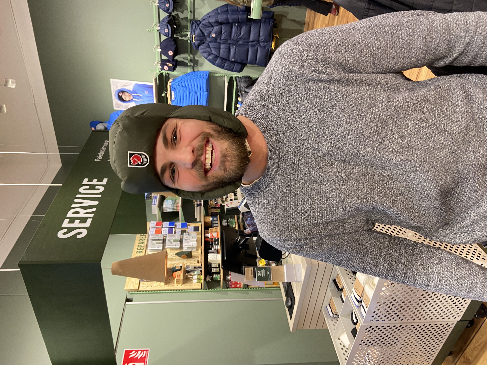

Björn Hedin
Massör
bjornmassor@gmail.com
För dig som vill ha en lite mer djupgående massage där fokus ligger på
att jobba igenom de djupt gående strukturerna.

Anja Bengtsson
Naprapat
anjanaprapat@gmail.com
Det finns inget bättre än att få fixa människors kroppsliga problem
direkt, genom bara några små justeringar!

Agneta Svensson
Massör
agnetamassor@gmail.com
Hos mig så kan du välja klassisk massage för ren avslappning eller
idrottsmassage för den som vill lösa upp gamla spänningar.